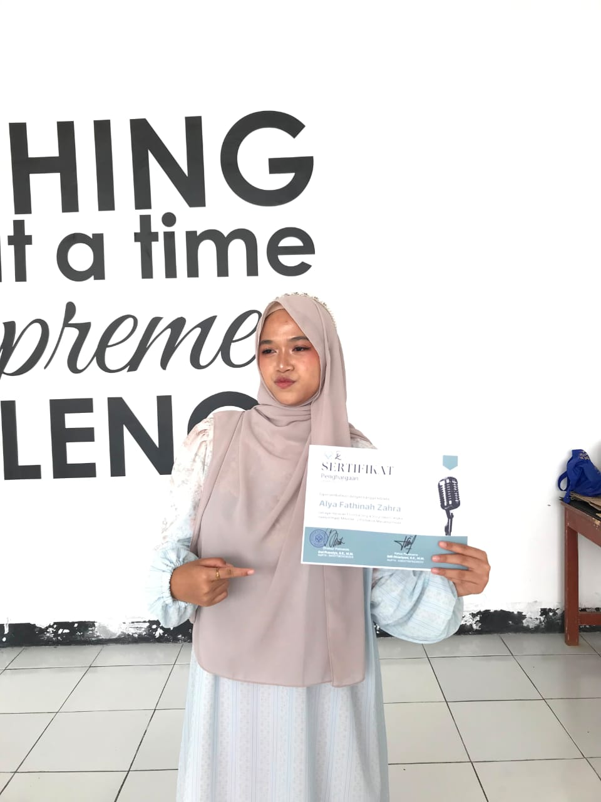

Alya Fathinah Zahrah
Web Developer di Meditif | Desain Grafis di LPPM | Mahasiswi TRPL
Lihat Profil Lengkap
Media Kreatif & Desain Grafis
Aktif dalam pengembangan antarmuka web, visual branding, dan publikasi media kreatif.
Pengalaman Organisasi
Public Speaking & Kepanitiaan
Pemateri PKKMB 2026, Panitia Dies Natalis Politeknik, & Peserta Seni Vokal Kampus.
Lihat Dokumentasi Kegiatan